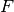
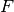

Enrichment¶
Bright handles enrichment cascades in a very general manner. The Enrichment object supports normal two isotope component mixture enrichment as well as multi-component cascades.
Multi-component enrichment poses a special modeling issue because the problem is underdetermined by an order equal to the number of nuclides in the cascade minus two. (Thus, two-component enrichment is exactly determined.) Therefore, an N-2 dimensional surface of possible solutions exists. The ‘correct’ solution is found by optimizing , the mass at which the overall stage separation factor is unity. This model is largely based off of the work of A. de la Garza, E. von Halle, and H. Wood.
All functionality may be found in the enrichment module:
import bright.enrichment
The Enrichment Class¶
- class bright.enrichment.Enrichment¶
Enrichment Fuel Cycle Component Class. Daughter of FCComp.
Parameters : enrich_params : EnrichmentParameters, optional
This specifies how the enrichment cascade should be set up. It is a EnrichmentParameters instance. If enrich_params is not specified, then the cascade is initialized with values from uranium_enrichment_defaults().
name : str
The name of the enrichment fuel cycle component instance.
- mat_tail¶
In addition to the mat_feed and mat_prod materials, Enrichment also has a tails or waste stream that is represented by this attribute. The mass of this material and the ms_prod product material should always add up to the mass of the mat_feed feed stock.
- track_params¶
For Enrichment, the parameters that are automatically tracked are members of the following list: ["MassFeed", "MassProduct", "MassTails", "N", "M", "Mstar", "TotalPerFeed", "SWUperFeed", "SWUperProduct"].
- alpha_0¶
The attribute specifies the overall stage separation factor for the cascade. This should be set on initialization. Values should be greater than one. Values less than one represent de-enrichment.
- Mstar_0¶
The
 represents a first guess at what the Mstar should be.
The value of Mstar_0 on initialization should be in the ballpark
of the optimized result of the Mstar attribute. However, must
always have a value between the weights of the j and k key components.
represents a first guess at what the Mstar should be.
The value of Mstar_0 on initialization should be in the ballpark
of the optimized result of the Mstar attribute. However, must
always have a value between the weights of the j and k key components.
- Mstar¶
The attribute represents the mass for which the adjusted stage separation factor, , is equal to one. It is this value that is varied to achieve an optimized enrichment cascade.
- j¶
This is an integer in zzaaam-form that represents the jth key component. This nuclide is preferentially enriched in the product stream. For standard uranium cascades j is 922350 (ie U-235).
- k¶
This is an integer in zzaaam-form that represents the kth key component. This nuclide is preferentially enriched in the waste stream. For standard uranium cascades k is 922380 (ie U-238).
- xP_j¶
This is the target enrichment of the jth isotope in the product stream mat_prod. The
 value is set by
the user at initialization or run-time. For typical uranium
vectors, this value is about U-235 = 0.05.
value is set by
the user at initialization or run-time. For typical uranium
vectors, this value is about U-235 = 0.05.
- xW_j¶
This is the target enrichment of the jth isotope in the waste stream ms_tail. The
 value is set by the
user at initialization or runtime. For typical uranium vectors,
this value is about U-235 = 0.0025.
value is set by the
user at initialization or runtime. For typical uranium vectors,
this value is about U-235 = 0.0025.
- N¶
This is the number of enriching stages present in an ideal cascade. Along with Mstar and M, this number is optimized to ensure that a product enrichment of xP_j is attained.
- M¶
This is the number of stripping stages present in an ideal cascade. Along with Mstar and N, this number is optimized to ensure that a waste enrichment of xW_j is attained.
- N0¶
This is the number of enriching stages initially guessed by the user.
- M0¶
This is the number of stripping stages initially guessed by the user.
- TotalPerFeed¶
This represents the total flow rate of the cascade divided by the feed flow rate. As such, it shows the mass of material needed in the cascade to enrich an additional kilogram of feed. Symbolically, the total flow rate is given as
 while the feed rate is
. Therefore, this quantity is sometimes seen as ‘L-over-F’
or as ‘L/F’. TotalPerFeed is the value that is minimized to form an
optimized cascade.
while the feed rate is
. Therefore, this quantity is sometimes seen as ‘L-over-F’
or as ‘L/F’. TotalPerFeed is the value that is minimized to form an
optimized cascade.
- SWUperFeed¶
This value denotes the number of separative work units (SWU) required per kg of feed for the specified cascade.
- SWUperProduct¶
This value is the number of separative work units (SWU) required to produce 1 [kg] of product in the specified cascade.
- initialize(enrich_params)¶
The initialize method takes an enrichment parameter object and sets the corresponding Enrichment attributes to the same value.
Parameters : enrich_params : EnrichmentParameters
A class containing the values to (re-)initialize an Enrichment cascade with.
- calc(input=None)¶
This method performs an optimization calculation on M* and solves for appropriate values for all Enrichment attributes. This includes the product and waste streams flowing out of the the cascade as well.
Parameters : input : dict or Material or None, optional
If input is present, it is set as the component’s mat_feed. If input is a nuclide mapping (zzaaam keys, float values), it is first converted into a Material before being set as mat_feed.
Returns : output : Material
mat_prod
- calc_params()¶
This sets the Enrichment parameters to the following values:
self.params_prior_calc["MassFeed"] = self.mat_feed.mass self.params_after_calc["MassFeed"] = 0.0 self.params_prior_calc["MassProduct"] = 0.0 self.params_after_calc["MassProduct"] = self.mat_prod.mass self.params_prior_calc["MassTails"] = 0.0 self.params_after_calc["MassTails"] = self.mat_tail.mass self.params_prior_calc["N"] = self.N self.params_after_calc["N"] = self.N self.params_prior_calc["M"] = self.M self.params_after_calc["M"] = self.M self.params_prior_calc["Mstar"] = self.Mstar self.params_after_calc["Mstar"] = self.Mstar self.params_prior_calc["TotalPerFeed"] = self.TotalPerFeed self.params_after_calc["TotalPerFeed"] = self.TotalPerFeed self.params_prior_calc["SWUperFeed"] = self.SWUperFeed self.params_after_calc["SWUperFeed"] = 0.0 self.params_prior_calc["SWUperProduct"] = 0.0 self.params_after_calc["SWUperProduct"] = self.SWUperProduct
- PoverF(x_F, x_P, x_W)¶
Solves for the product over feed enrichment ratio.
Parameters : x_F : float
Feed enrichment.
x_P : float
Product enrichment.
x_W : float
Waste enrichment.
Returns : pfratio : float
As calculated above.
- WoverF(x_F, x_P, x_W)¶
Solves for the waste over feed enrichment ratio.
Parameters : x_F : float
Feed enrichment.
x_P : float
Product enrichment.
x_W : float
Waste enrichment.
Returns : wfratio : float
As calculated above.
The EnrichmentParameters Class¶
Enrichment has one major helper class, EnrichmentParameters, which aids in specifying the inputs necessary for the multi-component cascade model to run.
- class bright.enrichment.EnrichmentParameters¶
This class is a collection of values that mirror the attributes in Enrichment that are required for the cascade model to run. Like ReactorParameters, this class takes no arguments on initialization. An empty ErichmentParameters instance has all values set to zero.
- alpha_0¶
The attribute specifies the overall stage separation factor for the cascade. This should be set on initialization. Values should be greater than one. Values less than one represent de-enrichment.
- Mstar_0¶
The
represents a first guess at what the Mstar should be.
The value of Mstar_0 on initialization should be in the ballpark
of the optimized result of the Mstar attribute. However, must
always have a value between the weights of the j and k key components.
- j¶
This is an integer in zzaaam-form that represents the jth key component. This nuclide is preferentially enriched in the product stream. For standard uranium cascades j is 922350 (ie U-235).
- k¶
This is an integer in zzaaam-form that represents the kth key component. This nuclide is preferentially enriched in the waste stream. For standard uranium cascades k is 922380 (ie U-238).
- xP_j¶
This is the target enrichment of the jth isotope in the product stream mat_prod. The
value is set by
the user at initialization or run-time. For typical uranium
vectors, this value is about U-235 = 0.05.
- xW_j¶
This is the target enrichment of the jth isotope in the waste stream ms_tail. The
value is set by the
user at initialization or runtime. For typical uranium vectors,
this value is about U-235 = 0.0025.
- N0¶
This is the number of enriching stages initially guessed by the user.
- M0¶
This is the number of stripping stages initially guessed by the user.
Enrichment Helper Functions¶
- bright.enrichment.uranium_enrichment_defaults()¶
This function returns a new EnrichmentParameters instance which holds sensible initial values a urnaium enrichment cascade.
The values of this instance of EnrichmentParameters are as follows:
ued = bright.enrichment.EnrichmentParameters() ued.alpha_0 = 1.05 ued.Mstar_0 = 236.5 ued.j = 922350 ued.k = 922380 ued.xP_j = 0.05 ued.xW_j = 0.0025 ued.N0 = 30.0 ued.M0 = 10.0
Returns : ued : EnrichmentParameters
As defined above.